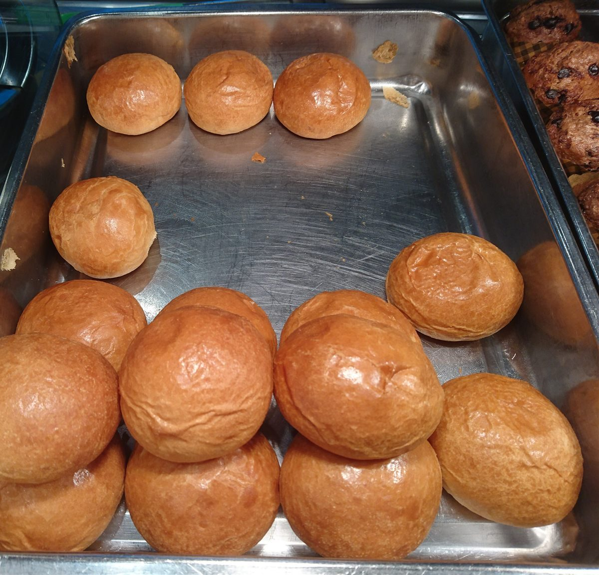

メニュー
メニュー
商品・価格は準備中です。確認でき次第、こちらに掲載します。
| 商品ラインナップ | 準備中 |
|---|---|
| 価格 | 準備中 |
| ご予約・お取り置き | 準備中 |
下の写真は、パンの雰囲気を伝えるためのフリー素材のイメージです。お店で提供しているものとは限りません。
イメージ
パンの雰囲気(イメージ)

撮影地不明のイメージ 
撮影地不明のイメージ 
国外のイメージ(ブラジル) 
国外のイメージ(米国) 
国外のイメージ(香港) 
国外のイメージ(オーストラリア) 
国外のイメージ(米国) 
撮影地不明のイメージ